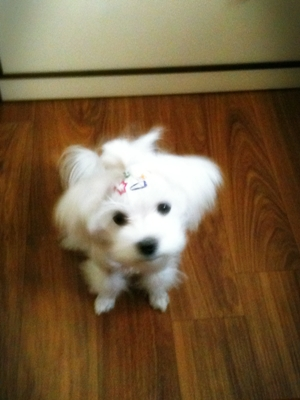
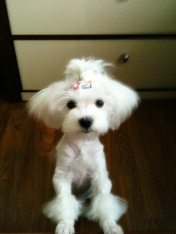
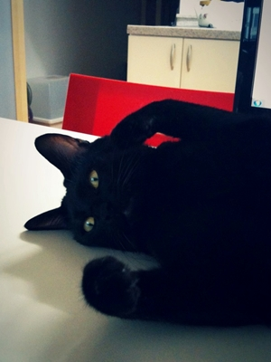

안녕?
네 대신 어머니께 효도중인 구름이란다.
고향집에서 어머니가 키우시는 강아지, 구름이다.
자식들 떠난 빈 자리를 그동안 여러 개들이 대신해왔는데,
8년이나 함께 살던 시추가 무지개다리를 건너 적적해하시던 차에
순백의 말티즈 아가, 구름이를 선물받으셨단다.
간장과 10개월 넘게 동거하면서 고양이에 길이 든 터라
오히려 국민 반려동물인 개가 신기하고 낯설었다.
고양이와 달리 혓바닥이 무척 부드럽고(하아~),
힘들게 놀아드릴 필요가 없다(!)는 사실이 가장 부러웠다.
아이폰으로 구름이 사진을 여러 장 찍어두었는데
새하얀 구름이 사진을 휙휙 넘기다가 새까만 간장사진이 나오면
나도 모르게 움찔~ 놀라게 된다;;;

에비~!
뭐, 이런 거... ( =_=)